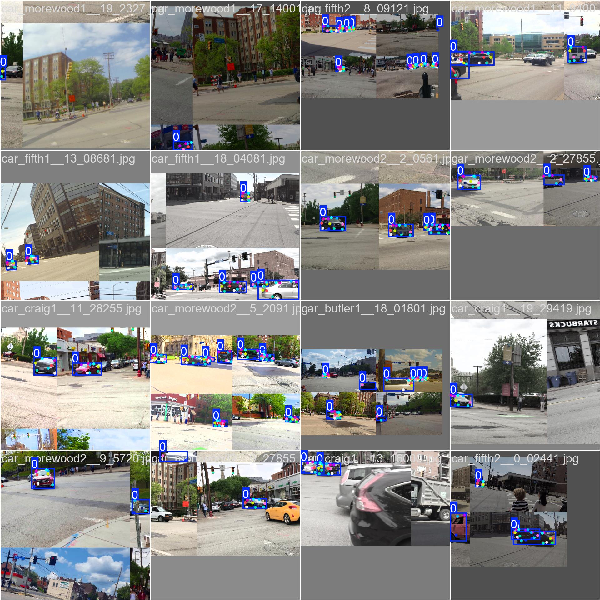
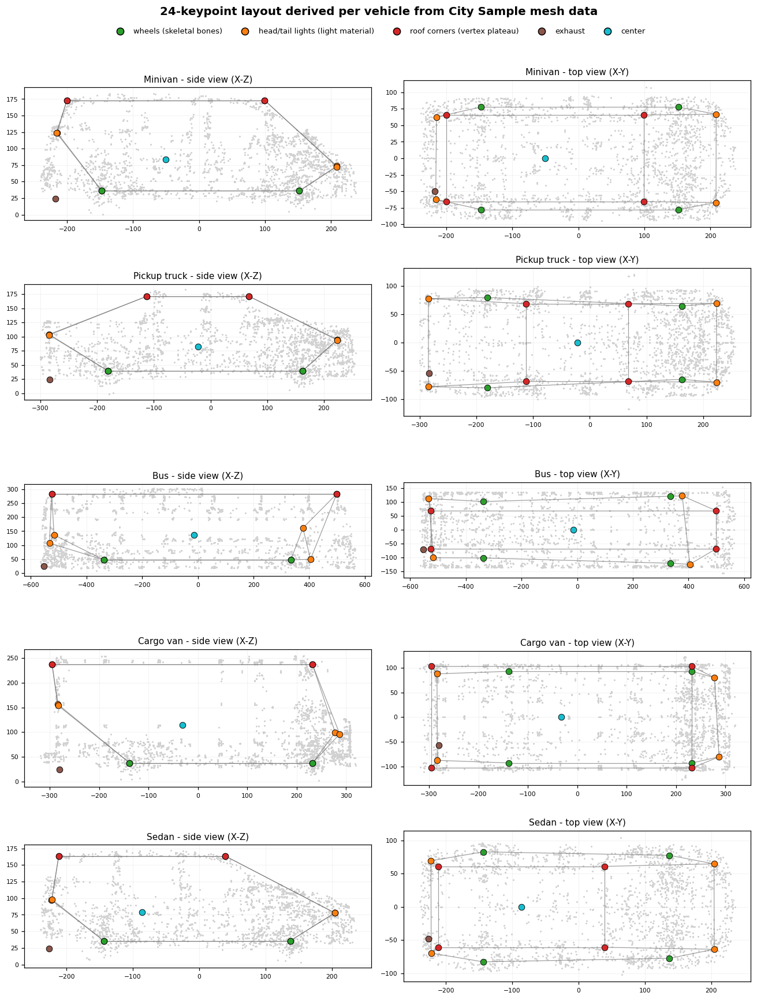
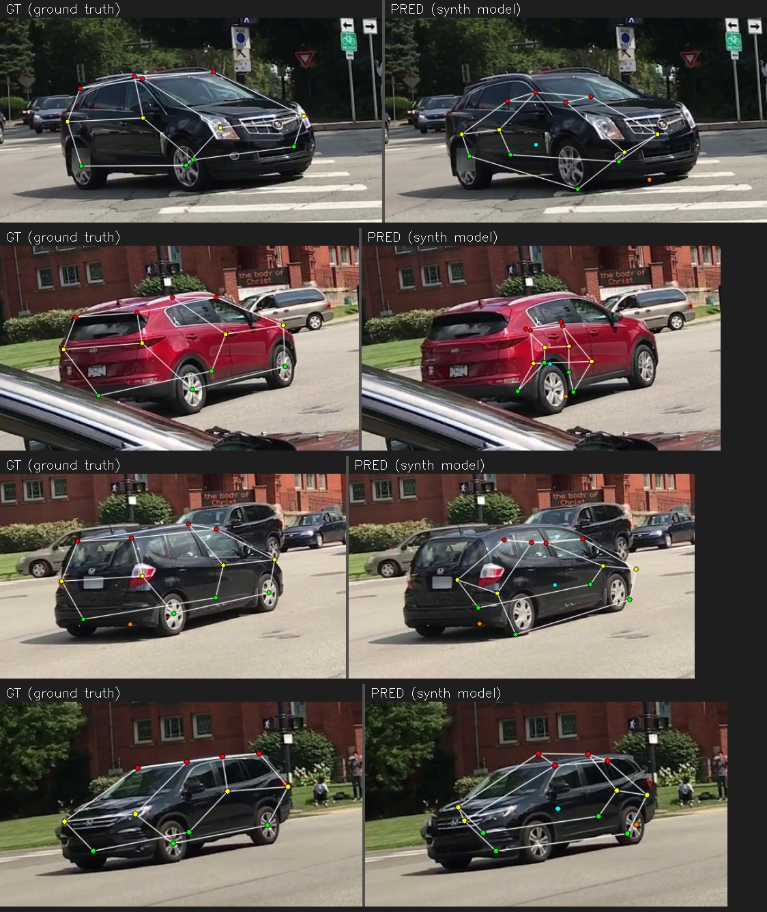

Synthetic pre-training experiment (Phase 0)
Can synthetic data rendered in a game engine improve a real-world vehicle-keypoint model? This page reports the experiment honestly - including a training bug the investigation uncovered that turned out to matter far more than the synthetic data itself.
The synthetic data comes from ue5-vehicle-synth: 2,510 frames rendered in Unreal Engine 5's City Sample across 4 venues x 3 lighting conditions x 3 hero vehicle rigs (sedan, minivan, pickup) plus randomized parked car/van types, with a 24-point keypoint schema (the first 14 match this repo's CarFusion canonical order). Dataset: kiselyovd/citysample-vehicle-keypoints-24pt.
The kill switch: synthetic pre-training must lift OKS-mAP by +2 pp on the held-out CarFusion test set (12,761 frames), or the approach is reconsidered.
The headline finding: a flip-augmentation bug, not the synthetic data
Auditing the training pipeline revealed that every run - including the original
v1 baseline - used ultralytics' default fliplr=0.5 with an identity keypoint
flip_idx. Horizontal-flip augmentation therefore mirrored the image without
swapping left/right keypoints: the "left wheel" label stayed on the left index
while the wheel moved to the right of the image, corrupting keypoints on ~half of
the augmented samples.
Fixing flip_idx to the correct left/right swap ([1,0,3,2,5,4,7,6,8,10,9,12,11,13])
and re-running the same recipe (full CarFusion, 30 epochs) on the real data alone:
| Model | OKS-mAP | OKS-mAP@50 | PCK@0.05 |
|---|---|---|---|
| v1 baseline (identity flip_idx) | 0.2199 | 0.350 | 0.496 |
| baseline, corrected flip_idx | 0.5038 | 0.704 | 0.761 |
| delta | +28.4 pp | +35 pp | +27 pp |
One-line augmentation fix more than doubled the model's accuracy. This corrected model is now the one published at kiselyovd/vehicle-keypoints.

The kill switch, measured correctly
With the flip fix in place, the matched two-arm ablation was re-run fresh from two starting checkpoints - the weak v1 (0.220 OKS-mAP) and the strong production detector (0.504) - on the final mesh-derived 2,510-frame capture. Identical settings in both arms; the only difference is the synthetic data:
| Start | Arm | OKS-mAP | mAP50 | PCK@0.05 |
|---|---|---|---|---|
| weak (0.220) | control (100 real x8, no synth) | 0.381 | 0.625 | 0.666 |
| weak (0.220) | + synthetic | 0.364 | 0.625 | 0.619 |
| strong (0.504) | control (100 real x8, no synth) | 0.441 | 0.659 | 0.716 |
| strong (0.504) | + synthetic | 0.346 | 0.617 | 0.610 |
Synthetic contribution: -1.7 pp OKS-mAP from the weak start, -9.5 pp from the strong one. The supplement never helps, and it hurts more the stronger the baseline: a weak detector has accuracy to gain from any extra supervision, while a strong one only stands to lose from a large out-of-domain admixture. Capture difficulty matters too - on an earlier, easier capture the strong-baseline penalty was only -2.4 pp; the released capture is deliberately biased toward hard, occluded poses and triples it. The kill switch (+2 pp or reconsider) is decisively failed.
Why the raw number is not the whole story
CarFusion is a noisy yardstick. Its ground truth is multi-view-triangulated and, even on its best-labelled cars, sparse and visibly scattered. Our synthetic labels are pixel-exact by construction (projected from the 3D mesh). But the noisy yardstick does NOT explain the penalty: recomputing the strong-baseline PCK penalty over only the 12 visually anchored points (dropping the unlabelable exhaust and center) leaves it unchanged at -10.6 pp, and per-keypoint the penalty is mildest exactly on those ill-defined points. The penalty is broad across well-anchored points - the signature of a domain shift, not label noise.

Two facts support that the synthetic data is high quality, independent of the CarFusion comparison:
- A model trained only on the synthetic frames reaches 0.84 box mAP@50 / 0.60 pose mAP@50 on held-out synthetic frames - the 24-point labels are clean and learnable (synthetic model on the Hub). Notably, switching to the mesh-derived configs doubled in-domain pose mAP (0.33 -> 0.60): consistent labels are far easier to learn, even though real-image transfer stayed flat.
- The labels are mesh-exact by construction (above), denser (24 vs 14 points), and complete (no occlusion-triangulation gaps).
Ruling out label geometry: the mesh-derived configs
One suspect for the transfer gap was the keypoint labels themselves. The original per-vehicle configs were a sedan template scaled by each vehicle's bounding box, which visibly mislocated points on non-sedan bodies - a van's roof and high tail lights, a pickup's cab-only roofline all got sedan-proportioned labels. The generator now derives every point from the vehicle's own mesh data: wheels from the skeletal wheel bones, roof corners from the body vertex cloud's roofline plateau, lights and mirrors from the centroids of the mesh sections bound to the light/mirror materials.

This gave a clean controlled test: re-capture, retrain synthetic-only, re-evaluate on real CarFusion. The answer is that label geometry was not the bottleneck - PCK@0.05 stayed at ~0.14 across the template-scaled, shape-corrected, and fully mesh-derived captures (0.144 / 0.134 / 0.142), even though the labels went from visibly wrong on large vehicles to geometrically exact. Per-keypoint results did shift the expected way (roof corners, whose geometry moved most, became the best-transferring points). The residual gap is appearance and coverage, not label precision.
What that looks like qualitatively - the synthetic-only model against real CarFusion ground truth (left GT, right prediction): the model has learned vehicle topology (roof/wheel structure), but localization on real photos is unreliable, worst on body shapes far from the small City Sample fleet.

Honest conclusion
- The dominant real-world win was an engineering fix (correct flip augmentation, +28 pp), not the synthetic data. Rigor on the training loop mattered more than the data source.
- On the CarFusion-graded kill switch, the synthetic supplement never helps and hurts more the stronger the baseline (-1.7 pp weak, -9.5 pp strong). The kill switch is failed.
- Label geometry is ruled out as the cause: the mesh-derived control left synthetic-only transfer unchanged (~0.14 PCK), and the penalty is mildest on the ill-defined points. What remains is the appearance gap and, most acutely, vehicle variety - the City Sample fleet is ~a dozen models against the unbounded variety of real traffic.
- The synthetic dataset itself is demonstrably high quality (in-domain learnability + mesh-exact construction); its unique value is where real data cannot follow - exact 3D ground truth (see the 3D pose baseline in the paper) - not as a 2D supplement to a strong real detector.
What's next
- A learned monocular 3D / 6-DoF pose model - the synthetic pipeline can emit exact per-keypoint 3D and object pose for free, which real datasets cannot. This is the use of synthetic data that real data genuinely cannot match.
- A cleaner real benchmark (or human-verified labels) to evaluate transfer without the CarFusion label-noise confound.
Artifacts
- Updated real-world model: kiselyovd/vehicle-keypoints (OKS-mAP 0.50)
- Synthetic-only 24-pt model: kiselyovd/citysample-vehicle-keypoints-24pt
- Synthetic dataset: kiselyovd/citysample-vehicle-keypoints-24pt
- Generator + pipeline: github.com/kiselyovd/ue5-vehicle-synth